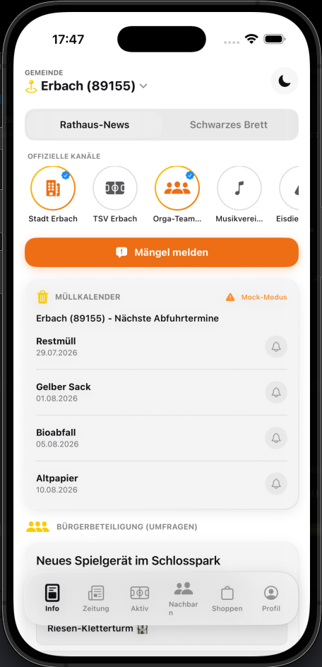
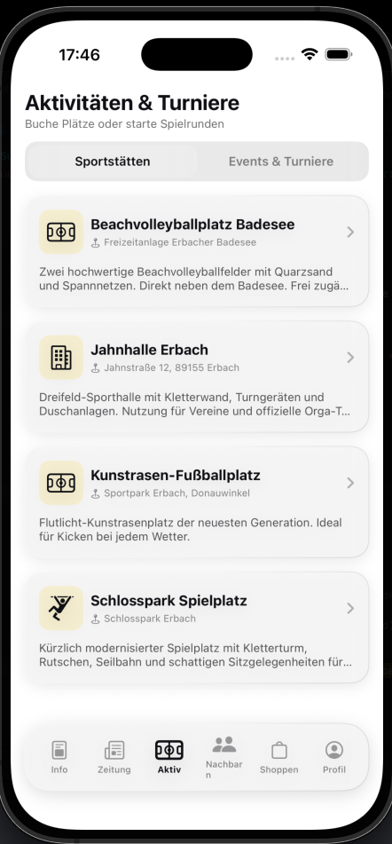
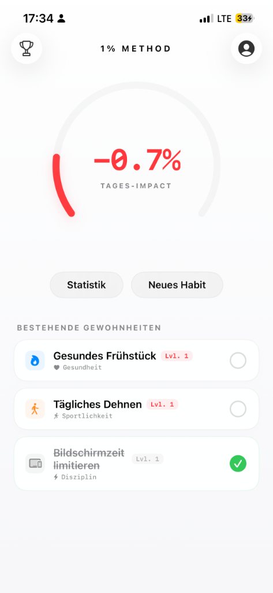
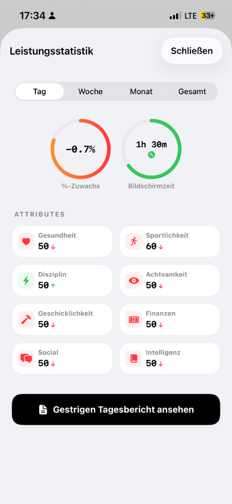
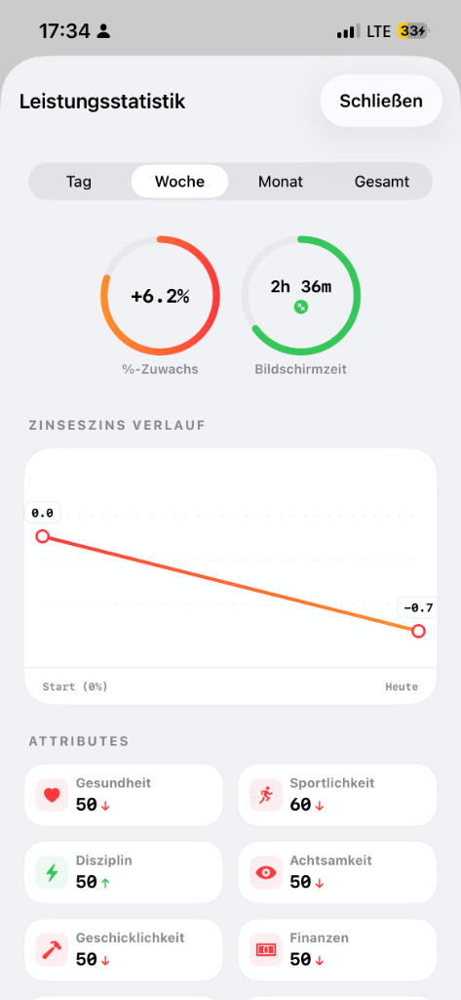

Konstruktion eigener FPV-Drohnen in Autodesk Fusion 360 & ArduPilot. Entwickler innovativer Apps & Plattformen (Comonut, 1%-Methode, PersonalManager, Grady, Notenkorrigierer) mit klarer Problemlöser-Vision. Noten: Mathe (14 Pkt.), Physik (14 Pkt.) & Wirtschaftsinformatik (13 Pkt.).
Klicke auf ein Projekt, um die Idee, Vision hinter der App und technische Details zu öffnen
💡 Die Vision: Mir fiel auf, dass Sportstätten (Fußballplätze, Beachvolleyballfelder, Tischtennisplatten) in Städten wie Erbach oft leer stehen und Kinder sich kaum noch draußen verabreden. Comonut bringt Nachbarn & Sportler zusammen und belebt das lokale Gemeindeleben wieder.


💡 Die Vision: Große Veränderungen scheitern meist an zu hohen Zielen. Die App hilft Nutzern, sich Schritt für Schritt selbst zu optimieren – „1% at a time“ – und macht den Zinseszins-Effekt kleiner täglicher Gewohnheiten sichtbar.



💡 Die Vision: Maximale Kontrolle, Performance und Flugstabilität durch maßgeschneiderte 3D-CAD-Framekonstruktion in Fusion 360 und exakt kalibrierte ArduPilot-Avionik.
💡 Die Vision: Proaktive Zeit- & Fokussteuerung für den Alltag, um unnötige Bildschirmzeit zu reduzieren und Aufgaben mit einer klaren Zeitleiste strukturiert abzuarbeiten.
💡 Die Vision: Schülern das Lernen und das Notenmanagement vereinfachen, um schulischen Erfolg strukturiert und ohne unnötigen Stress erreichbar zu machen.
💡 Die Vision: Zeitersparnis bei der Prüfungskorrektur durch automatisierte OCR-Erkennung handschriftlicher Arbeiten und präzises, nachvollziehbares KI-Feedback.
Praktische Fertigkeiten, Schulische Noten und Entwicklungswerkzeuge
Ich besuche das Kaufmännische Gymnasium Ehingen (KSE) nahe Ulm und schließe mein Abitur im Juli 2027 ab. Meine Motivation: Echte Probleme in der Praxis zu erkennen und mit Drohnentechnik, Hardware und KI-gestützter Softwareentwicklung konkrete Lösungen zu bauen – von der 3D-CAD-Konstruktion eigener FPV-Drohnen bis hin zu nützlichen Apps (Comonut, 1%-Methode, PersonalManager, Grady, Notenkorrigierer).
Mein Ziel: Ein Duales Studium (Data Science & KI / Informatik / Elektrotechnik) ab September 2027 bei einem führenden High-Tech- und Rüstungsunternehmen.